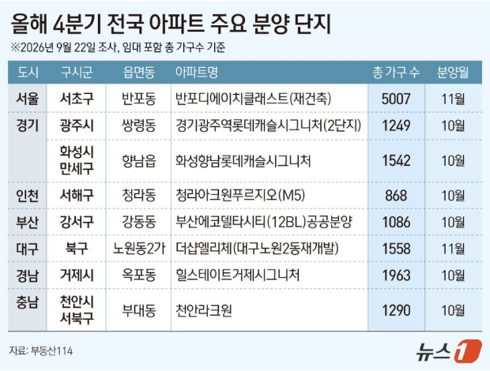

9/25(금) · 기준 2026-09-24 22:00 ~ 2026-09-25 06:00
엑셀 다운로드
"이미지 다운로드"를 누르거나, 이미지를 길게 눌러 저장한 뒤 카톡으로 보내세요.

![[연합뉴스] 2026 아이치·나고야 아시안게임 메달리스트(24일)](images/graphics/연합뉴스_01.jpg)
![[연합뉴스] 2026 아이치·나고야 아시안게임 국가별 메달 현황(24일)](images/graphics/연합뉴스_02.jpg)
![[뉴스1] [그래픽] 2026 아이치·나고야 아시안 게임 기계체조 여자 도마 금메달-여서정](images/graphics/뉴스1_03.jpg)
![[뉴스1] [그래픽] 2026 아이치·나고야 아시안 게임 카누 스프린트 남자 카약 4인승 500m 금메달-김효빈·장상원·조광희·최민규](images/graphics/뉴스1_04.jpg)
![[뉴스1] [오늘의 그래픽] 기업 10곳 중 8곳 추석 연휴 '나흘'… 61%](images/graphics/뉴스1_05.jpg)


![“추석 지나면 도로 24만전자?” 안절부절 개미들…31%의 확률이었다는데 [내가샀다]](images/article_07.png)

![[단독] '레버리지 ETF' 손실 규모 첫 확인…개인 투자자, 증권사 1곳서만 4200억 잃어](images/article_09.png)


![[속보] 연휴 첫날 고속도로 정체 극심…서울→부산 최대 9시간 30분](images/article_12.png)
![‘아침은 사골우거지국’ 윤석열·김건희 세 번째 ‘부부 옥중 명절’…특식·접견·전화 없다 [세상&]](images/article_13.png)


![시진핑, 트럼프 면전서 대만 '레드라인'…“독립 반대 견지하라” [미중정상회담]](images/article_18.png)